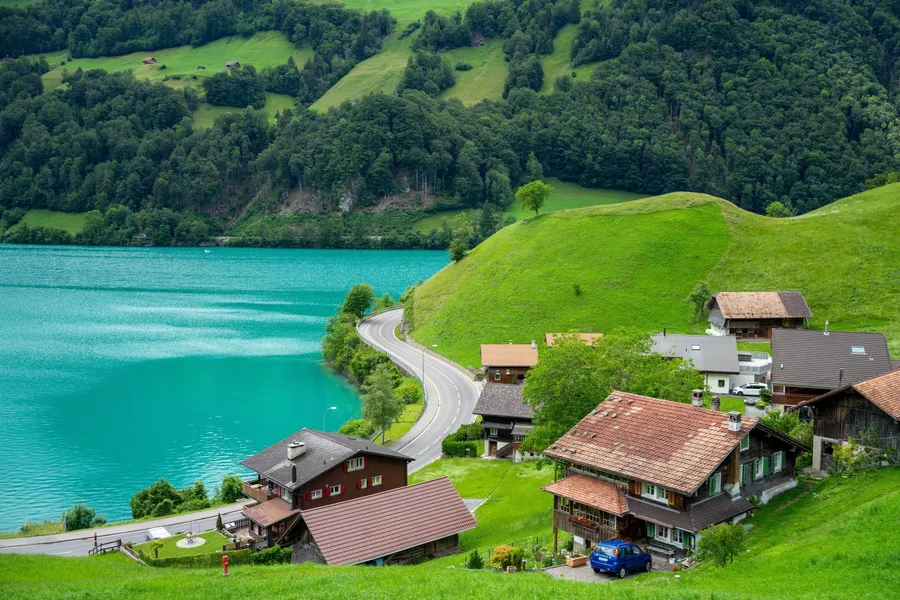
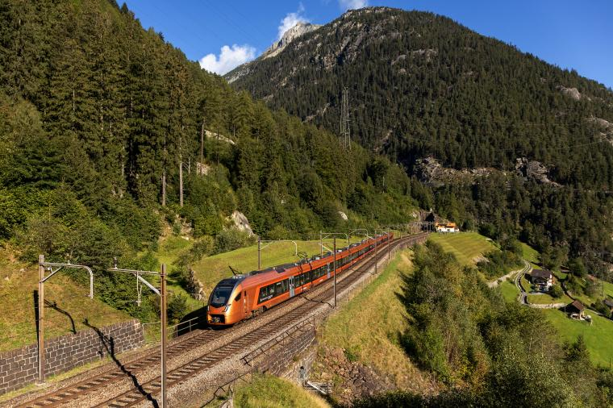
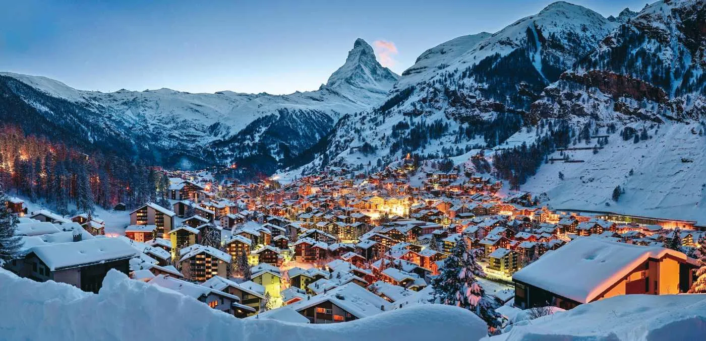

เลื่อน
⌄ยินดีต้อนรับสู่สวิตเซอร์แลนด์
สัมผัสธรรมชาติอันยิ่งใหญ่ เทือกเขาแอลป์อันสวยงาม และเมืองสุดโรแมนติกของยุโรป
ทำไมต้องสวิตเซอร์แลนด์?
ดินแดนแห่งหิมะและภูเขาแอลป์นี้เต็มไปด้วยความงดงามและวัฒนธรรมที่เป็นเอกลักษณ์ ไม่ว่าจะเป็นทะเลสาบสีฟ้าใส สะพานไม้โบราณ หรือหมู่บ้านกลางหุบเขา ทุกแห่งล้วนชวนให้คุณหลงใหลตั้งแต่แรกเห็น
เมืองท่องเที่ยวยอดนิยม




เซอร์แมท
เป็นเมืองชนบทเล็กๆ ที่สวยงาม ล้อมรอบด้วยภูเขา ตั้งอยู่บนเทือกเขาแอลป์ในรัฐวาเล ประเทศสวิตเซอร์แลนด์ ที่นี่เป็นเมืองท่องเที่ยวที่มีความปลอดภัยสูงมาก
อ่านเพิ่มเติมเกร็ดน่ารู้เกี่ยวกับสวิตเซอร์แลนด์
- มีภาษาราชการ 4 ภาษา: เยอรมัน, ฝรั่งเศส, อิตาลี และ โรแมนช์
- เป็นประเทศที่มีภูเขาสูงกว่า 4,000 เมตร มากที่สุดในยุโรป
- ช็อกโกแลตสวิสมีชื่อเสียงโด่งดังไปทั่วโลก และชาวสวิสบริโภคช็อกโกแลตมากที่สุดในโลก